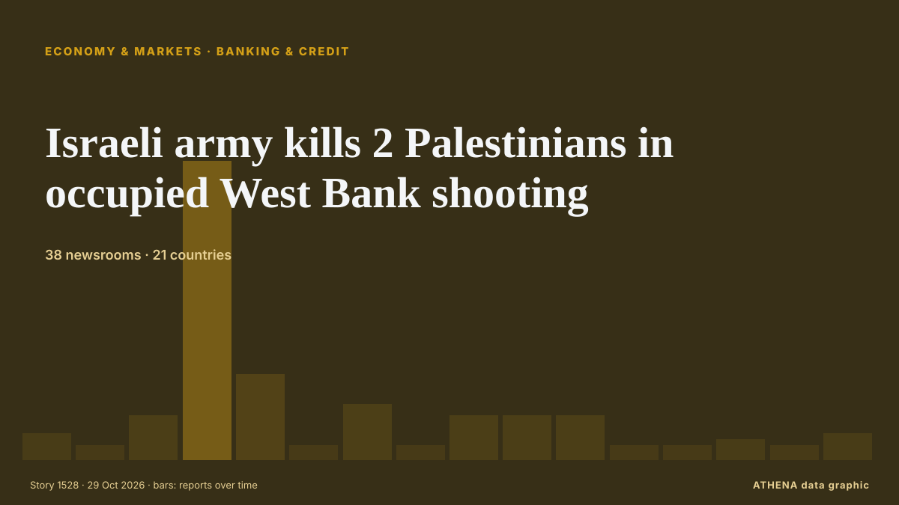

Wirtschaft
Weltwirtschaft heute
Letzte 24 Stunden — Ereignisse: 45, Länder: 36. Höchstes Risiko jetzt: 5.5 — Mexico City Day of the Dead Seen at US$664M.

Wirtschaft und MärkteIsraeli army kills 2 Palestinians in occupied West Bank shooting
West Bank: Palestinian youth injured, settlers attack cars, steal olive harvest A Palestinian youth suffered injury to the head due to a live-fire shrapnel during a raid by the Israeli military in… von Middle East Eye
| 18. Okt. | 0 |
|---|---|
| 19. Okt. | 5 |
| 20. Okt. | 1 |
| 21. Okt. | 4 |
| 22. Okt. | 5 |
| 23. Okt. | 12 |
| 24. Okt. | 2 |
| 25. Okt. | 12 |
| 26. Okt. | 51 |
| 27. Okt. | 41 |
| 28. Okt. | 45 |
| 29. Okt. | 41 |
| 30. Okt. | 41 |
| 31. Okt. | 12 |
Tracker
Neueste
Shadab heroics lift Pakistan past England
Pakistan all-rounder Shadab Khan struck an unbeaten 113 and shared a record 89-run last-wicket stand with Haris Rauf as the hosts rallied from 154-9 to secure a one-wicket win... von Oman Observer
African players in Europe: Jackson brace ends City’s perfect record
AFP Sport highlights African headline-makers in the major European leagues last week. von Free Malaysia Today
Sinner to play in Six Kings Slam in Riyadh at end of December - report
(ANSA) - ROME, 26 OTT - Jannik Sinner will make his comeback from a long layoff with a knee injury at the end of December at the Six Kings Slam event in Riyadh, Saudi Arabia, Supertennis, the TV… von ANSA English
California Billionaire Tax Vote Explained
California votes on 3 November on a one-time 5% tax on billionaires. von The Rio Times
UN raises ‘ethnic cleansing’ concerns over Israel’s Hebron operation
Israel's military operation in the occupied West Bank city of Hebron, launched after a deadly attack by Palestinian gunmen, raises serious concerns of "ethnic cleansing", the United Nations warned… von Al-Monitor
Britain will not join Canada-led defence bank initiative
Oct 26 - Britain will not join the Canada-led Defence, Security and Resilience Bank, in a setback to efforts to create the world's first global defence bank, according to a person familiar with the… von The Straits Times
AKAA art and design fair brings African artists to Paris
Every year the art and design fair AKAA, or "Also Known as Africa", brings dozens of African and Afro-descendant artists to the French capital. von France 24 English
Norway's sovereign wealth fund loses over $30 billion in 3rd quarter
Norway's sovereign wealth fund, the world's largest with assets of more than $2 trillion, on Thursday reported a negative return of 278 billion kroner ($31 billion) in the third quarter as it was… von The Local Norway
Italy demands release of five activists detained by Israel during West Bank olive harvest
(ANSA) - ROME, 22 OTT - The Italian Ministry of Foreign Affairs has taken action to obtain information regarding the detention of several female Italian activists in the village of al-Bweib, south of… von ANSA English
IMF says Middle East, North Africa and Pakistan GDP to contract 1.3pc in 2026
The International Monetary Fund (IMF) on Thursday forecast a sharp drop in economic output in Pakistan, the Middle East and North Africa this year due to the US-Israeli-led war against Iran, followed… von Dawn
Venezuelan leader demands Bank of England return gold
CARACAS, Venezuela (AFP) — Venezuelan interim president Delcy Rodriguez demanded Wednesday the return of her country's gold reserves held at the Bank of England, where they were frozen more than six… von Jamaica Observer
Budget 2026 LIVE: All the major announcements including wage increases and new £100 payment
The Budget is John Healey's chance to set out the government's spending plans on issues including the minimum wage and alcohol duty. von Liverpool Echo